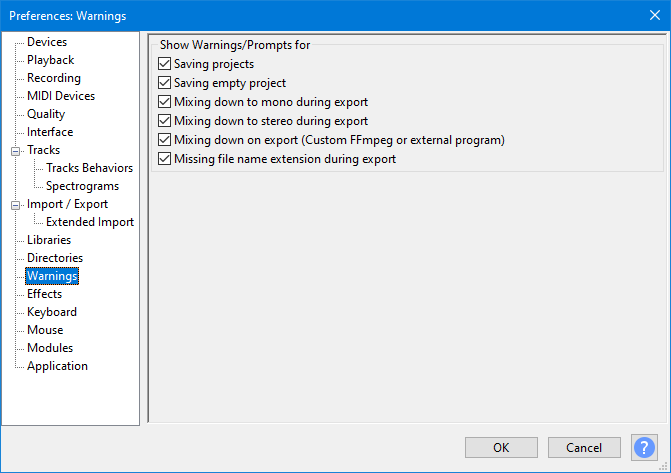
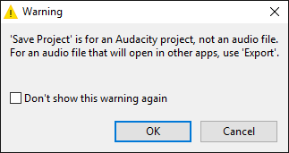
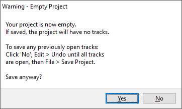
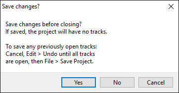
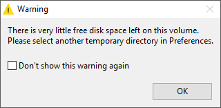
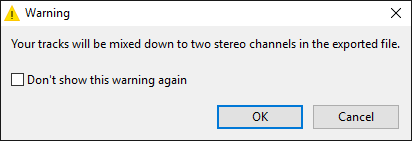
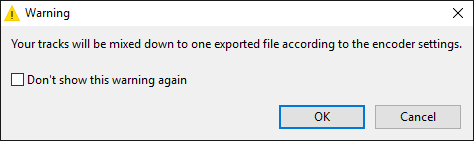
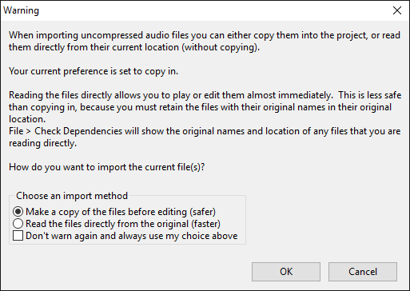

Warnings Preferences
From Audacity Development Manual
Warnings preferences let you disable or re-enable various advisory prompts or warnings.
- Accessed by: (on a Mac )
- 
- Warnings Preferences.
Show Warnings/Prompts for
- Saving projects: Every time you save a standard Audacity project or a compressed copy of a project, Audacity will warn that this command is only for an Audacity project and that you must use an export command to produce an audio file that you can open in other applications. Once you understand this, you can turn off both these warnings from within either warning dialog.
 
- Saving empty project: Audacity will warn when you try to save (left-hand image) or close (right-hand image) a project that previously contained tracks but is now empty. This warning can only be turned off in Preferences (not by a checkbox in the warning) because of the risk of accidental data loss if the warning is disabled.
 
- Low disk space at application start up: Audacity will warn on start up or when using to create a new project if you have 100 MB or less space in the temporary folder for recording or editing.
- 
- When mixing down to stereo during export: Audacity will warn when a stereo audio file will be created as the result of an export operation that involves mixing two tracks or more. If you normally want to export to stereo audio files you can turn this warning off.
- 
- When mixing down to mono during export: Audacity will warn when a mono audio file will be created as the result of an export operation that involves mixing two tracks or more.

- When mixing with Custom FFmpeg export: Audacity will warn that your export will be to a single file accrding to your encoder settings.
- 
- Importing uncompressed audio files: When you import an uncompressed audio file Audacity will:
- Tell you which import option is currently set in Import / Export Preferences - copy in or read directly
- Give you the opportunity to change that current import option
- Let you turn off this warning (this still respects the button selected above for copy in or read directly, even if you have changed it)
- 